TOMCAT WEBAPP开发环境搭建
一、安装和配置：
1、下载TOMCAT、TOMCAT ECLIPSE插件、ECLIPS、JDK；
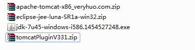
下载地址：http://pan.baidu.com/s/1kTKMYfP
2、双击jdk自动安装JAVA；
3、将TOMCAT ECLIPS插件安装到ECLIPS；
4、在ECLPSE上设置TOMCAT，主要是TOMCAT目录，如下：
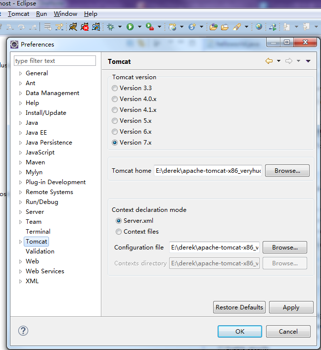
二、HELLOWORLD（一）:创建一个web app
新建一个DYNAMIC WEB APP；
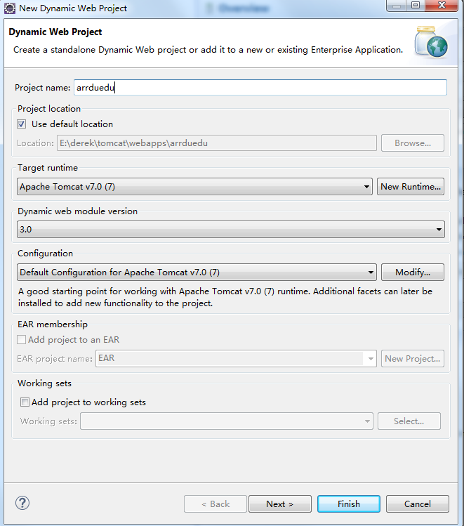
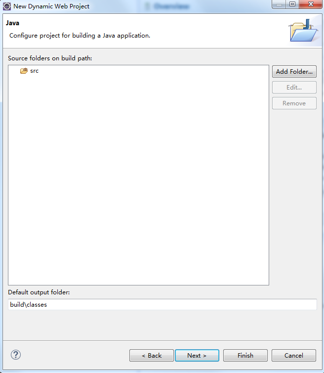
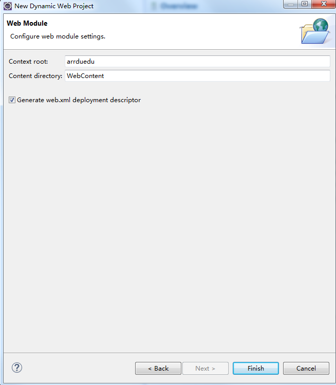
建立OK后，在项目浏览器里可以看到：
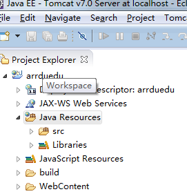
编译OK后，将该PROJECT ADD进SERVER：
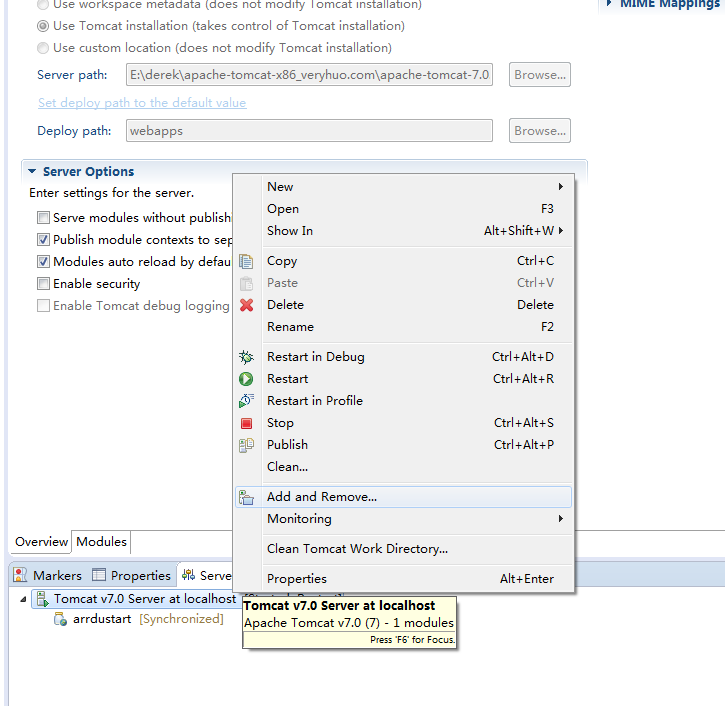
ADD成功后可以看到：
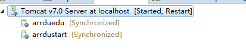
ADD成功后，会自动在TOMCAT安装目录的webapps下生成该项目的运行文件：
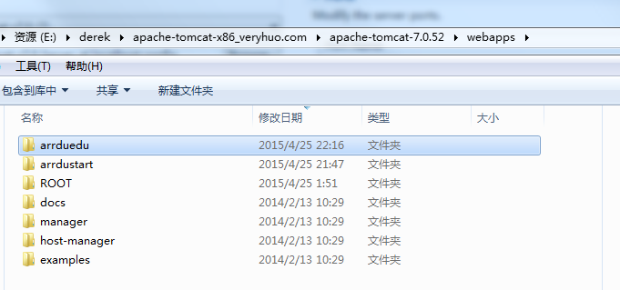
在其中添加该地址的访问首页：
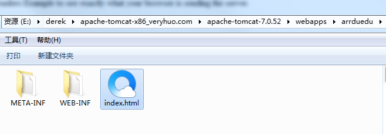
最后运行SERVER：
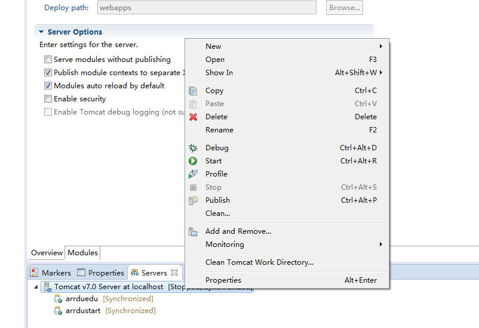
在浏览器中输入：http://localhost:8080/arredu 即可看到index.html内容；
HELLOWORLD(二)：添加servlet类
右键点击src，添加一个servlet类：
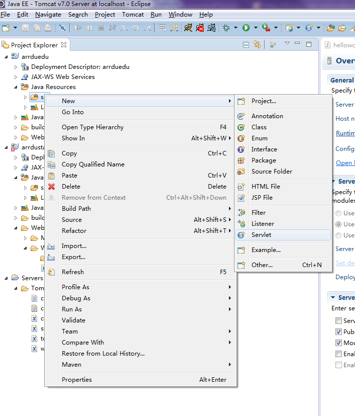
设置好包名，类名：
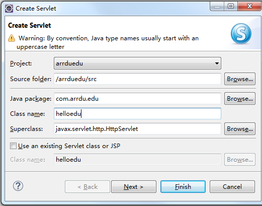
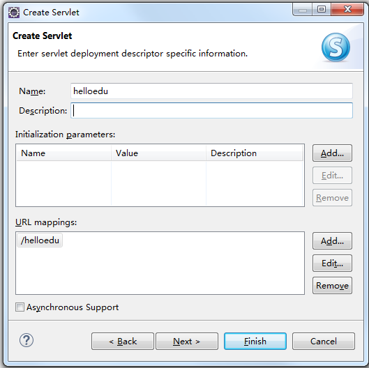
其中的rul mappng是访问这个servlet的次地址，即浏览器上通过http://localhost:8080/arrduedu/helloedu
来访问，可以添加多个来访问同一个servlet；
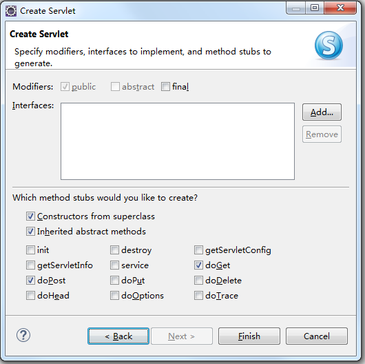
最后可以选择需要实现的一些方法；
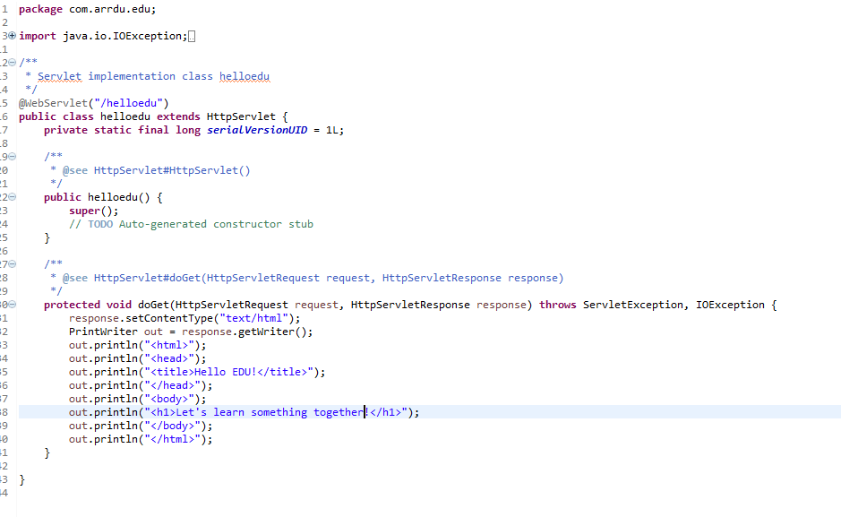
简单实现doGet方法；
运行SERVER，在浏览其中输入：http://localhost:8080/arrduedu/helloedu
即可看到：
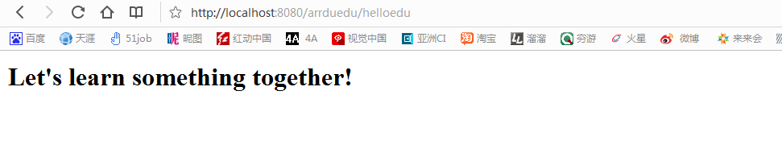
三、将工程发布到云端web server：
在本地调试OK后，将本地TOMCAT安装目录下的web app 拷贝到云端tomcat服务器安装目录的webapps目录下即可；
Ps1:本地开发是app的开发目录并不一定在tomcat的安装目录的webapps目录下，当将app添加到SERVER时才会在tomcat安装目录下生成该APP；这是该APP的运行目录；也就是在部署到云端要用到的目录；
Ps2:在建立DYNAMIC WEB project时若没有SERVE，则新建一个TOMCAT SERVER，其设置如下:
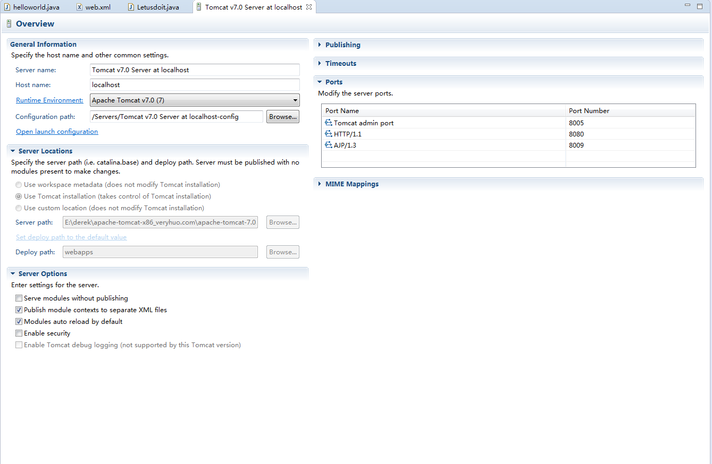